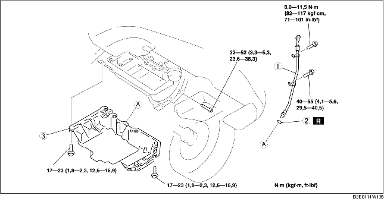

1. Déposer le couvercle de la batterie. (voir la section DEPOSE/REPOSE DE BATTERIE [LF].)
2. Débrancher le câble négatif de la batterie.
3. Déposer le cache inférieur et la bavette ensemble.
4. Déposer le pneu avant (droite).
5. Vidanger l'huile moteur. (voir la section REMPLACEMENT D'HUILE MOTEUR [LF].)
6. Déposer la plaque de trou de bougie. (voir la section DÉPOSE/REPOSE DE PLAQUE DE TROU DE BOUGIE [LF].)
7. Déposer la courroie de transmission. (voir la section REMPLACEMENT DE COURROIE DE TRANSMISSION [LF].)
8. Placer le réservoir de réserve de liquide de refroidissement à un endroit où il ne gêne aps.
9. Déposer le compresseur de climatiseur sans débrancher les tuyaux. (voir la section DEPOSE/REPOSE DE COMPRESSEUR DE CLIMATISATION [LF].)
10. Déposer la bobine d'allumage. (voir la section DEPOSE/REPOSE DE BOBINE D'ALLUMAGE [LF].)
11. Placer le support de câble d'accélérateur à un endroit où il ne gêne pas.
12. Déposer le capteur de position de vilebrequin (CKP). (voir la section DEPOSE/REPOSE DE CAPTEUR DE POSITION DE VILEBREQUIN (CKP) [LF].)
13. Déposer le cache avant du moteur. (voir la section DEPOSE/REPOSE DE CHAINE DE DISTRIBUTION [LF].)
14. Déposer les différents éléments selon l'ordre indiqué dans le tableau.
15. Pour la repose, suivre l'ordre inverse de la dépose.
16. Faire le plein d'huile moteur avec le type et la quantité d'huile moteur spécifiés. (voir la section REMPLACEMENT D'HUILE MOTEUR [LF].)
17. Démarrer le moteur et rechercher les fuites d'huile.
18. Inspecter le niveau d'huile. (voir la section INSPECTION DU NIVEAU D'HUILE MOTEUR [LF].)
19. Inspecter la distribution d'allumage et le régime de ralenti. (voir la section MISE AU POINT DU MOTEUR [LF].)

.
|
1
|
Tuyau de jauge de niveau d'huile
|
|
2
|
Joint torique
|
|
3
|
Carter d'huile
(voir la section Note sur la dépose du carter d'huile.)
(voir la section Note sur la repose du carter d'huile.)
|
1. Déposer le carter d'huile à l'aide de l'outil de séparation.
1. Nettoyer complètement le logement et le carter d'huile, en veillant à éliminer toute trace d'huile, d'impuretés, d'agent d'étanchéité et de corps étrangers pouvant y adhérer.
2. Lors de la réutilisation des boulons de fixation du carter d'huile, éliminer toute trace d'agent d'étanchéité usagé sur les boulons.
3. A l'aide d'une équerre, aligner le carter d'huile et le côté jonction du bloc-cylindre sur le côté couvercle avant du moteur.
4. Appliquer du produit d'étanchéité à base de silicone sur le carter d'huile, le long des orifices de boulon, comme indiqué dans la figure.
5. Serrer les boulons selon l'ordre indiqué dans l'illustration.